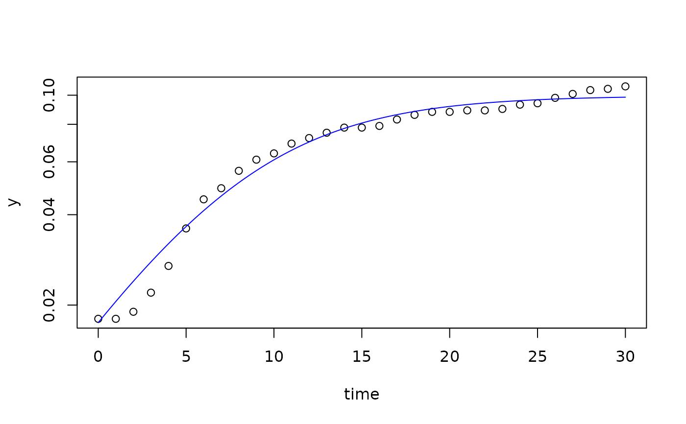

Determine maximum growth rates by fitting nonlinear models.
Arguments
- FUN
function of growth model to be fitted.
- p
named vector of start parameters and initial values of the growth model.
- time
vector of independent variable.
- y
vector of dependent variable (concentration of organisms).
- lower
lower bound of the parameter vector (optional).
- upper
upper bound of the parameter vector (optional).
- which
vector of parameter names that are to be fitted.
- method
character vector specifying the optimization algorithm (see
modFit).- transform
fit model to non-transformed or log-transformed data.
- control
A list of control parameters for the optimizers. See Details.
- ...
additional parameters passed to the optimizer.
Details
This function calls modFit from package FME.
Syntax of control parameters and available options may differ, depending
on the optimizer used, except control=list(trace=...) that switches
tracing on and off for all methods and is either TRUE, or FALSE,
or an integer value like 0, 1, 2, 3, depending on the optimizer.
See also
modFit about constrained fitting of models to data
Other fitting functions:
all_easylinear(),
all_growthmodels(),
all_splines(),
fit_easylinear(),
fit_spline()
Examples
data(bactgrowth)
splitted.data <- multisplit(bactgrowth, c("strain", "conc", "replicate"))
## get one element either by index or by name
dat <- splitted.data[[1]]
dat <- splitted.data[["D:0:1"]]
p <- c(y0 = 0.01, mumax = 0.2, K = 0.1)
## unconstraied fitting
fit1 <- fit_growthmodel(FUN = grow_logistic, p = p, dat$time, dat$value)
coef(fit1)
#> y0 mumax K
#> 0.0174826 0.2000701 0.0996260
summary(fit1)
#>
#> Parameters:
#> Estimate Std. Error t value Pr(>|t|)
#> y0 0.017483 0.001581 11.06 9.98e-12 ***
#> mumax 0.200070 0.013979 14.31 2.10e-14 ***
#> K 0.099626 0.001850 53.87 < 2e-16 ***
#> ---
#> Signif. codes: 0 ‘***’ 0.001 ‘**’ 0.01 ‘*’ 0.05 ‘.’ 0.1 ‘ ’ 1
#>
#> Residual standard error: 0.004246 on 28 degrees of freedom
#>
#> Parameter correlation:
#> y0 mumax K
#> y0 1.0000 -0.8689 0.4537
#> mumax -0.8689 1.0000 -0.7048
#> K 0.4537 -0.7048 1.0000
## optional box-constraints
lower <- c(y0 = 1e-6, mumax = 0, K = 0)
upper <- c(y0 = 0.05, mumax = 5, K = 0.5)
fit1 <- fit_growthmodel(
FUN = grow_logistic, p = p, dat$time, dat$value,
lower = lower, upper = upper)
plot(fit1, log="y")
